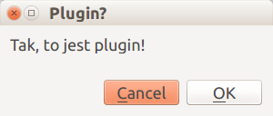

Samodzielnie budowany plugin - wersja minimum¶
Struktura plików wtyczki¶
Katalog wtyczki¶
Proces tworzenia pluginu rozpoczyna się od utworzenia katalogu, w którym znajdują się wtyczki. W zależności od systemu, katalog ten należy utworzyć w:
- windows
- C:UsersUSERAppDataRoamingQGISQGIS3profilesdefaultpythonplugins
- Linux
- /home/USER/.local/share/QGIS/QGIS3/profiles/default/python/plugins
Katalog może mieć dowolną nazwę, ale warto aby kojarzyła się ona z budowaną wtyczką. katalog zawierający custom plugin nazywa się custom. W celu ułatwienia sobie pracy, warto utworzyć skrót (windows) lub link symboliczny (linux) to katalogu z wtyczką w miejscu znacznie bardziej dostępnym niż ścieżka dostępu. W katalogu należy utworzyć kilka niezbędnych plików. Te pliki to:
- __init__.py - plik inicjujący, nie wymaga zmian
- plugin.py, form.py - właściwy kod pluginu, min. jeden plik
- metadata.txt - metadane na temat pluginu
- resources.py - zawiera elementy niezbędne do zbudowania interface
- icon.png, resource.qrc - ikona i plik do wykonania zasobów do wyświetlania w interface
Plik __init__.py¶
Zawartość tego pliku zawiera jednie definicję jednej funkcji classFactory, przyjmującej jako argument iface - tj interface programistyczny QGIS. Funkcja wykonuje jedynie dwie czynności:
- Importuje z pliku – w tym wypadku nazwany custom klasę TestPlugin a następnie;
- zwraca obiekt utworzony na bazie tej klasy, który jako argumenty przyjmuje odwołanie do interface QGIS.
W trakcie budowania własnego pluginu custom zastępujemy nazwą pliku zawierający kod pluginu a klasę TestPlugin klasą zawartą w tym pliku.
# -*- coding: utf-8 -*-
def classFactory(iface):
from .custom import TestPlugin
return TestPlugin(iface)
Informacja
Należy również zwrócić uwagę, że nazwa pliku z którego importujemy klasę musi być poprzedzona kropką (.). Kropka oznacza, że importujemy z tego samego katalogu, w którym znajduje się wywołujący plik.
W tym przykładzie (co jest ogólnym zaleceniem) rozdzielimy logikę pluginu na dwie części: część dotyczącą interface (plik form.py) która nie zawiera odwołań do API QGIS oraz część zawierającą właściwy kod (plik custom.py), który będzie się odwoływał do formy zawartej w tym pliku. Takie rozwiązanie jest wygodniejsze z punktu widzenia zasad programowania, ale też jest możliwe aby cały kod umieścić w jednym pliku.
Plik form.py¶
Plik ten zawiera kod niezbędny do zbudowania formatki. Podstawy tworzenia formatek zostały omówione w poprzedniej części. Zaproponowana formatka to klasa o nazwie message, dziedziczy po klasie QDialog będącym standardowym widgetem frameworka Qt. Klasa zawiera minimum elementów:
- Formatkę (QDialog)
- polecenia ustawiające rozmiar i tytuł formatki
- Etykietę (infoLabel) zawierające napis: „Tak, to jest plugin!”
- Standardowy ButtonBox
- Pionowy layout…
- …do którego wstawiono etykietę
- …wypełniacz (Strech)
- …oraz buttonBox
- W ostatnim kroku ustawiono Layout
- I dodano standardowe sygnały
Zawartość pliku wygląda następująco:
from PyQt5.QtCore import *
from PyQt5.QtGui import *
from PyQt5.QtWidgets import *
class message(QDialog): #1
def __init__(self):
super().__init__()
self.resize(300,100) #2
self.setWindowTitle("Plugin?") #2
self.infoLabel = QLabel("Tak, to jest plugin!") #3
buttonBox = QDialogButtonBox(QDialogButtonBox.Cancel|QDialogButtonBox.Ok) #4
mainLayout=QVBoxLayout() #5
mainLayout.addWidget(self.infoLabel) #5A
mainLayout.addStretch() #5B
mainLayout.addWidget(buttonBox) #5C
self.setLayout(mainLayout) #6
buttonBox.accepted.connect(self.accept) #7
buttonBox.rejected.connect(self.reject) #7
Tak zaprojektowana formatka powinna wyglądać następująco:
Po zapisaniu pliku można go zaimportować do głównego pliku pluginu, którym w naszym wypadku jest plik custom.py
Plik custom.py¶
Nazwa tego pliku może być dowolna. Zasadniczo, w ramach konwencji przyjmuje się że powinien się tak nazwać jak katalog zawierający plugin.
Główny plik pluginu musi się rozpoczynać od importu niezbędnych bibliotek. Absolutnym minimum jest jądro Qt i Gui oraz jądro qgis. Jądro Qt warto importować poprzez QGIS, co gwarantuje nam że zaimportuje się odpowiednia wersja obsługiwana przez QGIS (istotne w systemie linux). Następnie importujemy funkcje i klasy z dwóch plików: resources oraz klasy (tu: message) z pliku form (tu: form). należy pamiętać o poprzedzeniu importowanych elementów kropką.
Zawartość pliku przedstawia się następująco:
from qgis.core import *
from qgis.PyQt.QtGui import *
from qgis.PyQt.QtWidgets import *
# initialize Qt resources from file resources.py
from . import resources
from .form import message
Główna klasa pliku o nazwie TestPlugin zawiera cztery główne funkcje:
- __init__ - inicjująca klasę
- Przypisanie iface do klasy, tak aby był dostępny dla wszystkich funkcji
- utworzenie obiektu .msg na podstawie klasy
message
- initGui - zaiwera elementy, które pozwolą umieścić nowo utworzony plugin w menu oraz na pasku narzędziowym. Poszczególne polecenia funcji określają:
- położenie ikony:”:/plugins/custom/icon.png”
- Nazwę pluginu: „Custom plugin”
- Tooltip: „It will do something, eventually”
- Menu do którego zostanie przypisany plugin („Home made”)
- Unload - jest to funkcja, która usuwa wpisy przy wyłączeniu QGIS - należy wskazać menu, z którego usuwamy wpis
- Run - Funkcja uruchamiająca własne funkcje. Najważniejszą z nich jest funkcja show oraz wykonanie zawartości formatki, zmienna result przechowuje wartość True jeżeli udało się wykonać formatkę.
Zawartość klasy TestPlugin:
class TestPlugin:
def __init__(self, iface):
self.iface = iface
self.msg=message()
def initGui(self):
self.action = QAction(QIcon(":/plugins/custom/icon.png"), "Custom plugin", self.iface.mainWindow())
self.action.setStatusTip("It will do something, eventually")
self.action.triggered.connect(self.run)
# add toolbar button and menu item
self.iface.addToolBarIcon(self.action)
self.iface.addPluginToMenu("&Home made", self.action)
def unload(self):
self.iface.removePluginMenu("&Home made", self.action)
self.iface.removeToolBarIcon(self.action)
def run(self):
self.msg.show()
Po wykonaniu formatki uruchamia się kolejne funkcje wykonujące główne zadanie pluginu (omawiane w innej sekcji).
ikona oraz plik resources.qrc¶
W celu przygotowania interface należy przygotować plik resoruces.qrc zawierający jeden slot. W tym slocie modyfikujemy jedynie ścieżkę dostępu w naszym przypadku /plugins/custom zmieniamy na własną nazwę katalogu:
<RCC>
<qresource prefix="/plugins/custom" >
<file>icon.png</file>
</qresource>
</RCC>
Plik metadata.txt¶
Plik składa się z dwóch części: obowiązkowej, niezbędnej do tego aby zarejestrować plugin w QGIS druga część jest nieobowiązkowa i pozwala na dodatkowe informacje, które nie są niezbędne do uruchomienia pluginu.
W pliku możemy stosować komentarze, które rozpoczynają się od średnika „;” opisy powinny być po angielsku. Więcej na: [http://docs.qgis.org/testing/en/docs/pyqgis_developer_cookbook/plugins.html#plugin-metadata]
cześć obowiązkowa:
[general]
name=Custom plugin
email=me@mail.com
author=Just Ja Sam
qgisMinimumVersion=2.0
Opis pluginów
description=Opis samodzielnie wykonanego pluginu
Można stosować wiele linii:
linie, które należą do tego samego pola
muszą być oddzielone spacjami
formatowanie HTML nie jest dopuszczalne
about=Szczegółowy opis pluginu
można stosować wiele linii (spacje) HTML - nie
Informacja o wersji i repozytorium
version=version0.666
tracker=http://bugs.server.org
repository=http://www.server.org/repo
cześć opcjonalna
Kategoria tematyczna i historia rozwoju
category=Vector
changelog=The changelog lists the plugin versions
and their changes as in the example below:
0.666 - Great version
0.600 - All features implemented
0.001 - First testing release
Tags (tagi lub słowa kluczowe): powinny być rozdzielane przecinkami, po angielsku
tags=wkt,vector,training```
Strona Domowa:
homepage=http://www.server.org icon=icon.png
experimental flag (eksperymentalny): Stosuje się do aktualnie ładowanej wersji pluginu:
experimental=True
deprecated flag (niezalecany) - stosuje się do całego pluginu
deprecated=False
maksymalna wersja: jeżeli puste to będzie automatycznie qgisMinimumVersion + .99
qgisMaximumVersion=3.0 ```